Sources for this page
- Hong Kong Tourism Board (HKSAR Government) | Yau Ma Tei Fruit Market | https://www.discoverhongkong.com/eng/place-to-go/travel.guide-yau-ma-tei-fruit-market.html
Where to find occlupanids in Hong Kong
To most people, the answer would be stores of bakery chains, supermarkets, or convenience stores near where they live or work / study, but these are just the tip of the iceberg.
What to look for in supermarkets
Bread (obviously), fruit and vegetables (the imported ones, not the mainland Chinese ones...with some exceptions, more on that later), noodles (mostly udon, imported from Japan or South Korea), frozen and refrigerated food (imported bread, fruit/veg, noodles), and snacks (both sweet and savoury). If you are checking a Citysuper store, try to look for crab meat or scallop cans in small nets.
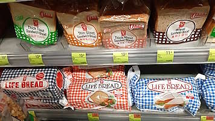 |
| several bags of bread of the brand Garden, closed by P. utiliformis and P. u. grandis |
| a Fusion store |
| Photo taken in Y2021-M04 |
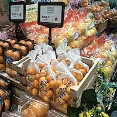 |
| several bags of kumquat of the brand JA伊万里, closed by white U. kinkani, imported from Japan; other imported fruit in the background |
| Great Food Hall in Pacific Place II in Admiralty |
| Photo taken in Y2026-M04 |
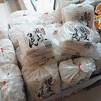 |
| several bags of udon noodles of the brand Hoi Cheong Lung, closed by red D. wangi, imported from Japan (the brand is a Hong Kong brand but the udon noodles were made in Japan by an unknown producer) |
| Uny in Metro City Plaza II (MCP Central) in Tseung Kwan O |
| Photo taken in Y2026-M01 |
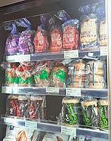 |
| several bags of sliced bread and bagels of the brands Base Culture, Canyon Bakehouse, and Bagels Forever, closed by white P. utiliformis, white P. magnastoma, and white P. utiliformis respectively, all of which were imported from the United States; frozen |
| Citysuper in AIRSIDE in Kai Tak |
| Photo taken in Y2026-M03 |
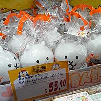 |
| several bags of cat-shaped box containing chocolate of the brand Puku Pot, closed by white D. wangi with amiculae attached, imported from Japan |
| Don Don Donki in Pearl City in Causeway Bay |
| Photo taken in Y2026-M02 |
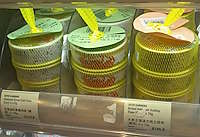 |
| several nets containing cans of crab meat or scallop of the brand Suto, closed by yellow N. baldwina, imported from Japan |
| Citysuper in Harbour City in Tsim Sha Tsui |
| Photo taken in Y2026-M01 |
Supermarkets - the "big two" supermarket groups and other local supermarkets
Okay, the first thing you should understand is that, not all supermarkets are equal. The "higher end" a supermarket is, the more likely you are to find imported products that may have interesting occlupanids on them. For the DFI group's supermarkets, try visiting Market Place, 3hreeSixty, or Oliver's The Delicatessen, not just your local Wellcome store. The AS Watson equivalent of mid to high-end supermarkets are Taste, Fusion, Food le Parc, Great Food Hall, and Food Parc (especially the latter two).
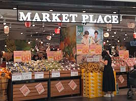 |
| a Market Place store |
| Photo taken in Y202-M0 |
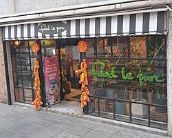 |
| Food Le Parc in Quarry Bay |
| Photo taken in Y202-M0 |
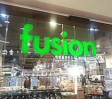 |
| a Fusion store |
| Photo taken in Y2026-M03 |
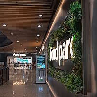 |
| Food Parc in Hopewell Hotel·Mall in Wan Chai |
| Photo taken in Y2026-M04 |
There is also FRESH, which sells fresh produce, meat, and seafood as its name implies, but you can find some peculiar occluapnids in some stores. For example, the FRESH store at Lohas Park sells bread of the brand Itoya, the bags of which are closed by yellow P. u. grandis with no markings. It is the only way to get yellow P. u. grandis with no markings locally as far as I know. It should not be confused with Taste×FRESH, which is a joint venture (?) between AS Watson's Taste and FRESH, but I don't think I have seen much interesting occlupanids there so far.
The supermarkets that sell imported products
As I have established, it is more likely to have interesting occlupanids on imported products. There are AEON, Apita / Uny, Don Don Donki, SOGO, and YATA for Japanese products. Side note, be sure to check the in-store bakeries in AEON stores too (most stores have twist ties on their bread bags but occlupanids can be found on bread bags of at least one store: Cantevole in AEON Whampoa).
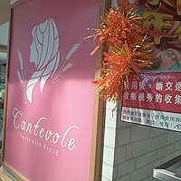 |
| AEON in-store bakery Cantevole in AEON Whampoa |
| Photo taken in Y2026-M01 |
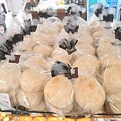 |
| several bags of store brand bread closed by dark brown A. taceotalus |
| AEON in-store bakery Cantevole in AEON Whampoa |
| Photo taken in Y2026-M01 |
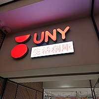 |
| UNY in Kolour Yuen Long |
| Photo taken in Y2026-M08 |
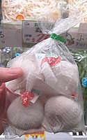 |
| a bag containing multiple nets of garlic of the brand Shirakawa Farm closed by red N. baldwina, imported from Japan |
| Don Don Donki in Pearl City shopping centre in Causeway Bay |
| Photo taken in Y2026-M03 |
Citysuper stores also sell products imported from not just Japan, but also Canada and the United States (you can look up what products they sell ahead of time online to narrow down your search in person at the store).
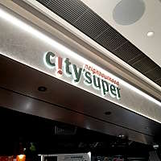 |
| Citysuper in The Southside shopping centre in Wong Chuk Hang |
| Photo taken in Y202-M0 |
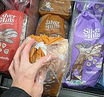 |
| several bags of bread of the brand Silver Hills closed by light tan P. magnastoma, imported from Canada |
| Citysuper in New Town Plaza 1 shopping centre in Sha Tin |
| Photo taken in Y2026-M01 |
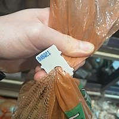 |
| a white P. mechadeus closing a bag of potatoes of the brand Nature's Pride (Cal-Ore Produce), imported from the United States |
| Citysuper in IFC Mall in Central |
| Photo taken in Y2026-M01 |
U Select used to sell products imported from Australia and the United Kingdom, but don't expect much from a supermarket chain that went from having dozens of stores to just two stores. My most recent visit to the two remaining stores found no occlupanids on imported products (the only UK products I found were canned fish). They do have occlupanids on bags of bread of the brand Garden, but the same can be said for most other supermarkets in Hong Kong.
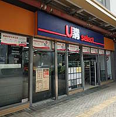 |
| U Select in Mun Tung Estate JoysMark shopping centre in Tung Chung |
| Photo taken in Y202-M0 |
Something not many people will think about are stores that sell products from the United States. I already mentioned the bags of frozen bread imported from the US, but there is one more type of product worth checking: big bags of paper bowls or plates. You can find species such as P. mechadeus or A. lehmeri on these bags. So far, I managed to find occlupanids on bags of paper bowls / plates in a&m US Groceries and Sam Tesco (it has nothing to do with Sam's Club - the US warehouse club, or Tesco, the UK supermarket).
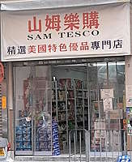 |
| Sam Tesco in Whampoa |
| Photo taken in Y2026-M02 |
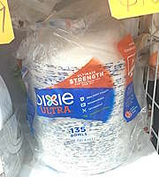 |
| a bag of paper bowls of the brand Dixie Ultra, closed by white A. lehmeri, imported from the United States |
| Sam Tesco in Yuen Long |
| Photo taken in Y2026-M01 |
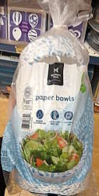 |
| a bag of paper bowls of the brand Member's Mark, closed by white A. lehmeri, imported from the United States |
| A&M US Groceries in Asia Standard Tower in Central |
| Photo taken in Y2026-M01 |
I would have mentioned Muji Food Market in Kowloon Bay prominently but it seems they stopped selling fresh food in 2026, which is unfortunate. The same can be said for Marks & Spencer, in which occlupanids could be found on rubber bands bunching together spring onions a few years ago, but not anymore.
Yau Ma Tei Fruit Market and other fruit stores
There is no better place to find imported high-end fruit than Yau Ma Tei Fruit Market, which is a chaotic (both good and bad) outdoor market consisting of a dozen or two fruit stores. As the Hong Kong Tourism Board put it, going to Yau Ma Tei Fruit Market is "an adventure". Alternatively, visit Ming Fruit Shop, a fruit store chain that sells imported fruit. You can also try visiting the random fruit stalls in markets and non-chain fruit stores such as Bless in Domain in Yau Tong (Bless used to have more stores but I think they closed all but this last one) or 甜蜜蜜高級水果專門店 in Hung Hom.
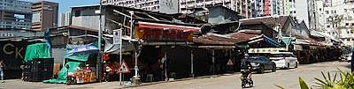 |
| Yau Ma Tei Fruit Market |
| Photo taken in Y2026-M03 |
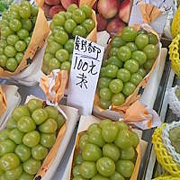 |
| white K. secondus attached on paper wrapping around shine muscat grapes of the mainland Chinese brand Lurra; however, the price tag says "Nagano shine muscat", presumably as an attempt to trick unsuspecting customers into buying the "Japanese grapes at a reasonable price" (which are in reality mainland Chinese grapes sold at a high price) |
| 嘉成果欄 in Yau Ma Tei Fruit Market |
| Photo taken in Y2026-M03 |
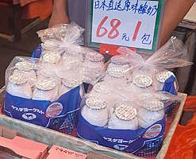 |
| several bags containing bottles of yogurt beverage of the brand ヤスダヨーグルト (Yasuda Yogurt), closed by white P. utiliformis, imported from Japan; the host content of yogurt beverage should be refrigerated as per the instruction on the host (the bag), but the specimens, hosts, and host contents were placed in a non-climate-controlled environment (out in the open) |
| a stall in Yau Ma Tei Fruit Market |
| Photo taken in Y2026-M01 |
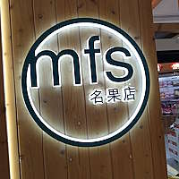 |
| Ming Fruit Shop in YOHO Mix |
| Photo taken in Y2026-M08 |
Other than imported high-end fruit, we can also find mainland Chinese fruit mixed in with Japanese fruit (mostly grapes), which is sold at Japanese fruit price with price tags showing "[insert Japanese city or prefecture name] [insert fruit name]". While we should not tolerate such unscrupulous business strategies (in fact I think that is illegal), there are also some quirky occlupanids to be seen on these not-Japanese fruit.
Pet supply stores
While not immediately obvious, you can find occlupanids on pet supplies. In Hong Kong, I have found occlupanids on big bags of rabbit hay. There were two stores I visited and found occlupanids in: Moon Rabbit in Mong Kok and Whiskers N Paws in Ap Lei Chau. However, I cannot find any rabbit hay in the latter as of 2026.
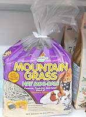 |
| a bag of rabbit hay of the brand American Pet Diner, closed by white M. sonorus, imported from the United States |
| Moon Rabbit in Mong Kok |
| Photo taken in Y2026-M02 |